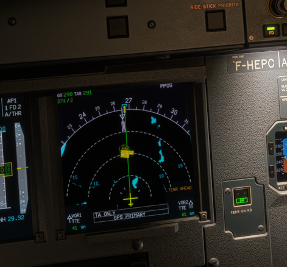
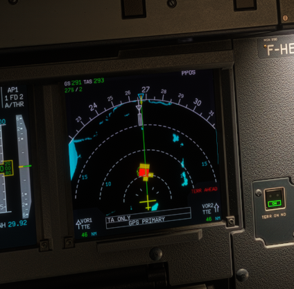
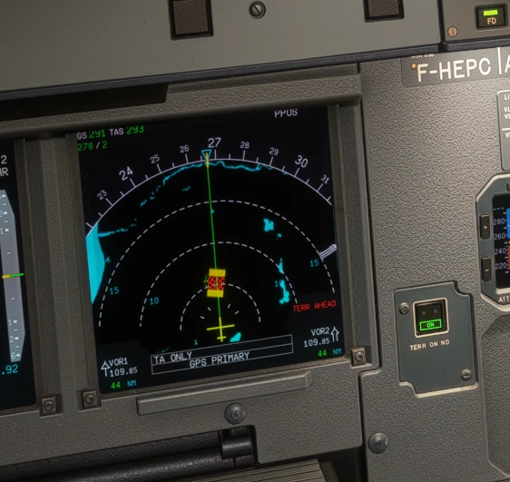

The A380X flight warning system (FWS) lacked many alerts of the FCOM. They were added unit by unit, by ATA chapter, each with its trigger, flight phase inhibitions, procedure lines, STATUS lines and, where the alert had no way to be triggered, a new flyPad failure: air conditioning (pack valve, pack overheat, pack regulation, mixer, ram air, cabin pressure sensors), avionics ventilation, cabin pressure, doors and T.O CONFIG for every door, ELEC busbars, landing gear and NAV disagree, engines (levels, THR LEVER ABOVE IDLE, attention box, tire pressure), hydraulic pressure switches and heat exchangers, fuel, CDS and mailbox access, datalink and COM, CIDS, APU. It also adds the unit-feet radio height callouts, the PITCH PITCH and COMPANY MESSAGE voices and a fix that keeps the FWS sound manager from looping when the audio functions are lost.
| # | Do this | Expected result |
|---|---|---|
| 1 | A380X powered on the ground or in cruise. flyPad > Failures > ATA 21 > Pack 1 overheat, Fail. | AIR PACK 1 OVHT on the E/WD with its procedure; Restore clears it. |
| 2 | flyPad > Failures > ATA 21 > Avionics ventilation left blowing filter clogged, then the right one. | After both: VENT AVNCS BLOWING DEGRADED on the E/WD (both circuits on their backup valves). |
| 3 | flyPad > Failures > ATA 79 > Engine 1 oil filter clog. | ENG 1 OIL FILTER CLOGGED comes without chime and without MASTER CAUT (FCOM level). |
| 4 | flyPad > Failures > ATA 23 > CIDS 1 (cabin intercommunication data system), then CIDS 2 and 3. | With all three failed: CAB COM CIDS 1+2+3 FAULT. |
The A32NX flight warning computer got the missing FCOM cautions with their procedure and STATUS lines: AIR bleed cautions, HYD cautions and warnings, ELEC bus, ESS bus and TR alerts, F/CTL surface cautions (both ELACs failed show one ELAC 1+2 FAULT), wing anti-ice, L/G DOORS NOT CLOSED, ventilation, COM, WHEEL HYD SEL FAULT, SIDESTICK and FAC alerts. The SD pages (BLEED, HYD, ELEC, DOOR/OXY, WHEEL, APU) show amber where the FCOM says so; the STATUS page now pages instead of cutting after 16 lines; the PFD gets V1 INOP and ILS / DME flags and the FMA line 3 messages. Pneumatic, electrical and brake control failures were added to the flyPad.
| # | Do this | Expected result |
|---|---|---|
| 1 | A32NX in cruise. flyPad > Failures > ATA 27, fail ELAC 1 then ELAC 2. | One alert ELAC 1+2 FAULT (not two ELAC FAULT alerts) with its procedure. |
| 2 | flyPad > Failures > ATA 36 > Engine 1 bleed valve stuck closed, with the engine running and the bleed on. | ENG 1 BLEED FAULT caution with its procedure; the SD BLEED page shows the bleed valve amber when it is not in the commanded position. |
| 3 | Cabin altitude above 14,000 ft (rapid decompression failure, flyPad > Failures > ATA 21). | The passenger oxygen masks drop by themselves. |
| 4 | Make a STATUS page longer than 16 lines per column (several failures). | A green arrow shows that more follows; CLR shows the next page. |
Display rules of the A380 FCOM that were wrong or missing: SD ELEC AC / DC (galley and commercial shed legends, generator DISC and OVHT, APU BAT voltage), F/CTL page (BKUP CTL ACTIVE), WHEEL page (WHEEL MORE, BCS / EBCU / SCS lines, brake arcs), automatic SD pages (CRUISE from 1,500 ft after take-off), PFD radio height (median of three RAs, same on both PFDs), the CAPT PFD reading the CAPT side FMS data, FMA messages (MAN DTO for a derated take-off, SPD BRK, CHECK APPR SEL), the VD radio altitude zone, the OANS destination arrow, the AGENT SQUIB light and the loudspeaker volume knobs, and the hosted display gates (a hidden gauge no longer takes the mouse of the DU).
| # | Do this | Expected result |
|---|---|---|
| 1 | A380X, take off and climb through 1,500 ft. | The SD shows the CRUISE page from 1,500 ft after take-off (not 60 s after the flaps are up). |
| 2 | Lose all PRIMs and SECs (flyPad > Failures > ATA 27) and look at the SD F/CTL page. | BKUP CTL ACTIVE in amber. |
| 3 | Final approach below 5,000 ft RA with the VD on the ND. | An amber radio altitude zone under the aircraft symbol; the radio height is the same on both PFDs. |
FADEC power supply and channels (A32NX alternator and DC buses, A380X EEC channels and EIPMs), the engine interface units, idle modes (approach idle, higher idle with packs, HI GND IDLE with an ENG BLEED STATUS FAULT, ENG IDLE HI with both pack controllers lost), the A380X NORMAL / DEGRADED (N1) modes with the degraded accuracy indications, the A32NX automatic TOGA 8 s after the levers are set below TOGA without FLEX, automatic relight ignition, the N3 run-down and quick relight, the A380X engine overspeed failure, the FCOM EGT limits, REV, FLEX and N2 crank indications on the E/WD, and the pre-start motoring of a hot engine.
| # | Do this | Expected result |
|---|---|---|
| 1 | A32NX at take-off without a FLEX temperature: set the thrust levers between CL and TOGA and leave them. | ENG THR LEVERS NOT SET; 8 s later the FADEC selects TOGA thrust, until the levers go back to CL or below. |
| 2 | A380X on the ground, ENG MASTER 1 OFF at idle, then back ON after 10 s. | The N3 runs down slowly (about 45 % after 10 s); ENG MASTER ON relights the engine while the N3 shown is still above the relight limit. |
| 3 | A380X in flight: flyPad > Failures > ATA 73 > Engine 1 overthrust (thrust control lost). | The FADEC shuts engine 1 down without automatic relight and ENG 1 FAIL shows the THRUST CTL LOST line. |
| 4 | A380X: fail both pack controllers (flyPad > Failures > ATA 21). | COND TEMP CTL FAULT, engines to idle high at idle thrust, STATUS INFO ENG IDLE HI. |
The flight plan predictions and the VNAV logic follow the FCOM: ECON speeds and OPT FL from the cost index, weight and wind, the constant Mach segment, RTA time constraints with speed control, optimum step and VNAV messages, the energy circle and DES CABIN RATE, descent predictions with anti-ice, predictions on the alternate and secondary flight plans, go-around, take-off and engine-out predictions with drift down, SAT entries for the cruise, time markers as pseudo waypoints, MORE DRAG and SPD BRK messages, holds (database hold, last exit time, unfolded on the VD), the EOSID, the FM position monitor, FUEL PRED and PREDICTIVE GPS pages of the A32NX MCDU.
| # | Do this | Expected result |
|---|---|---|
| 1 | A32NX with a flight plan, ZFW and cost index entered. Open PERF and PROG in cruise. | ECON cruise speed and OPT FL follow the cost index, weight and wind (not a fixed table and M.78). |
| 2 | A380X in descent toward the destination, ND in ARC or ROSE NAV. | A dashed energy circle within 180 NM of the destination; the VD shows the FLS beam on a non precision approach. |
| 3 | A380X MFD > F-PLN: add a hold with the HOLD revision; open the hold page and press DATABASE. | The hold becomes the database hold; LAST EXIT time and EFOB are predicted. |
| 4 | A380X: fail one engine in cruise (flyPad > Failures > ATA 72) and open PERF CRZ. | EO MAX, DRIFT DOWN TO FL and the EO CRZ MODE are shown. |
NO FLS FOR THIS APPR (amber FMS message: A32NX MCDU scratchpad, A380X MFD message area) shows when the approach you insert cannot be flown with the FLS: an LDA, SDF or TACAN approach, or an approach whose final course is more than 50 degrees off the runway. Clear it with CLR (A32NX) or CLEAR INFO (A380X). It comes back for each new approach of that kind. DISCONNECT AP FOR LDG on FMA line 3 now also shows on an F-G/S approach, because the FLS beam is not a precision approach. A32NX: autopilot still on at the minimum minus 50 ft, or 400 ft above the ground without a minimum. A380X: at the minimum minus 50 ft, or 350 ft above the landing elevation without a minimum (no longer a fixed 150 ft radio height).
| # | Do this | Expected result |
|---|---|---|
| 1 | A32NX or A380X: insert an LDA, SDF or TACAN approach (or one whose final course is more than 50 degrees off the runway) in the destination. | Amber NO FLS FOR THIS APPR. CLR / CLEAR INFO removes it; a new approach of that kind brings it back. |
| 2 | F-G/S approach, AP on, descend to the minimum minus 50 ft (400 / 350 ft above the ground without a minimum). | Amber DISCONNECT AP FOR LDG on FMA line 3. Disconnect the AP. |
Before, the A32NX GPWS only knew the basic modes, which work from the radio altimeter. Flying toward a mountain at FL100 gave no alert until the ground rose under the aircraft, far too late. The GPWS now also looks ahead: it knows the terrain around the aircraft from an elevation grid, and warns when your flight path and the terrain meet. Modes 1 and 2 were written again at the same time.
| Situation | You hear | You see |
|---|---|---|
| Terrain ahead, you can still avoid it (caution) | "TERRAIN AHEAD", repeated every 7 s | Amber GPWS light on both GPWS/PULL UP pbs; the terrain comes up on both NDs by itself, with an amber TERR AHEAD and the threat cells in yellow |
| Terrain right below the aircraft, too low for the place (terrain clearance floor) | "TOO LOW TERRAIN" once, and again each time you lose another fifth of your height above the floor | Amber GPWS light for as long as you are under the floor; the terrain does not come up by itself and there is no ND message |
| You are too low over ground that rises ahead (the look-ahead finds terrain that is lower than the aircraft) | "TOO LOW TERRAIN", repeated every 7 s | Amber GPWS light; the terrain does not come up by itself and there is no ND message |
| Terrain ahead, close (warning) | "TERRAIN AHEAD" once, then "PULL UP" again and again | Red PULL UP light; terrain on both NDs, red TERR AHEAD, the threat cells in red |
| Terrain ahead and the aircraft could not climb over it even with a pull-up | "AVOID TERRAIN" again and again (about every 1.5 s) | Red PULL UP light; terrain on both NDs, red TERR AHEAD, the warning cells in a red and black crosshatch |
| An obstacle (tower, mast) ahead, you can still avoid it (caution) | "OBSTACLE AHEAD", repeated every 7 s | Amber GPWS light; the terrain comes up on both NDs with an amber OBST AHEAD and the threat cells in yellow |
| An obstacle ahead, close (warning) | "OBSTACLE AHEAD" once, then "PULL UP" again and again | Red PULL UP light; red OBST AHEAD, the threat cells in red |
| An obstacle ahead that a pull-up could not clear | "AVOID OBSTACLE" again and again (about every 1.5 s) | Red PULL UP light; red OBST AHEAD, the warning cells in the red and black crosshatch |
| Mode 1 second boundary (sink rate too high near the ground), or mode 2 warning | "PULL UP" | Red PULL UP light |
| Any other basic alert (SINK RATE, mode 2 caution TERRAIN, DON'T SINK, TOO LOW ..., GLIDESLOPE) | The matching words | Amber GPWS light |
tools/gpws-voice/generate.py rebuilds it). The GPWS says one word at a time: the last PULL UP ends before the first AVOID TERRAIN, they never overlap. "AVOID OBSTACLE" is made the same way and waits for the last OBSTACLE AHEAD or PULL UP in the same way.


The A32NX has no airport database in its GPWS. Everything that depends on a runway (the terrain clearance floor, the phase of flight and its clearance, the mountainous approach area, the airport surroundings and the landing tunnel) uses only the runways below, and the one nearest to the aircraft counts.
| Runway | Where it comes from | What the GPWS knows about it |
|---|---|---|
| Destination | The destination airport of the flight plan (FMGC 1). With a runway or an approach chosen, the runway; without one, only the airport reference point. | The runway threshold (a displaced threshold is allowed for), its direction, length and elevation. For the airport reference point alone, only that point and its elevation. |
| Departure (flight plan) | The runway chosen for the origin airport in the flight plan. | Its start, direction, length and elevation. Used as the departure runway when the take-off roll starts on it. |
| Departure (where you stood) | The place where the aircraft last stood or taxied below 35 kt on the ground; if there is none yet (a flight loaded on the runway), the first position on the ground at any speed. It is used when the plan has no origin runway, or when you take off from another runway than the planned one. | That point and its elevation only, no direction and length. |
| Control | What it does |
|---|---|
| TERR pb OFF (overhead) | Inhibits TAD and TCF. Mode 2 is then active again (it is switched off while the predictive functions work). |
| GPWS SYS pb OFF | Inhibits the basic modes 1 to 5 and their lights. TAD and TCF keep working: they do not need the radio altimeter or the airspeed. |
| EMER CANC (ECAM control panel) | Silences the words of the predictive alert that is going on (also the repeats), until that alert is over. The lights stay on. After a pause without alert, a new alert speaks again; a caution that turns into a warning without a pause stays silent. |
| Stall warning | While the stall warning sounds, the FWC silences the GPWS, the words of the predictive alerts too (the lights stay). |
| TERR ON ND pb (each side) | Shows the terrain and obstacles on that ND (ARC and ROSE). An alert switches the pb on by itself once and puts the picture on both NDs for as long as it lasts. |
On a PULL UP or AVOID TERRAIN warning: autopilot off, pitch up firmly, TOGA thrust, wings level, and keep climbing until the alert stops (the usual Airbus terrain escape; the GPWS does not fly it for you).
| Limitation | Why | What to do |
|---|---|---|
| Obstacle alerts in the United States only. | The obstacle data is the FAA Digital Obstacle File, which lists the obstacles of the United States and its territories. Elsewhere there is no obstacle alert (and no TERR STBY for it: the terrain functions do not need the obstacle file). | Outside the United States, do not rely on it for man-made obstacles. |
| The obstacle data is a snapshot. | The grid is built once from the FAA file (26 October 2026); obstacles built or removed later are not in it until the file is rebuilt. | - |
| An obstacle alert can come a few seconds early. | An obstacle fills its whole 1 arcminute cell (about 1 NM), so the scan meets it up to about 1 NM before the real tower. | - |
| No runway database: only the destination and the departure runway are known. | TCF, the mountainous approach area, the airport surroundings and the landing tunnel only know the runways of the table above. An airport that is neither the destination nor the departure place has no floor, no tunnel and no cut-off. Above all, an approach to such an airport is not recognised as an approach: the look-ahead keeps its en route clearance of 700 ft (unless the destination or the departure place is within 15 NM), the landing tunnel does not inhibit it, and the alert goes on for as long as the ground threatens, down to touchdown. A landing at an airport that is not the flight-plan destination (an alternate you did not enter, or a flight started in the air without a flight plan) can therefore give TOO LOW TERRAIN, TERRAIN AHEAD, PULL UP and AVOID TERRAIN all the way down to touchdown. This was seen in the sim on 6 November 2026 (runway 28 of RJOA, flight started in the air, no destination); the cause is read from the code. | Enter the airport you are going to land at as the destination, with its runway, or set the TERR pb to OFF for that approach. |
| Valley airports can alert. | The grid cells are 1 arcminute (about 1 NM), so a narrow valley airport such as Innsbruck sits in cells with the heights of the surrounding mountains. A margin that grows with the relief around the cell is added because the source data is averaged and reads peaks too low. | Expect TOO LOW TERRAIN or TERRAIN AHEAD there; set TERR OFF if you must. |
| Coverage from latitude -84 to 83. | The terrain source has nothing beyond that. | Beyond it: TERR STBY. |
| The grid is a file, and without it there is TERR STBY. | The grid is panel/terrain_grid.bin in the A32NX package folder (about 20 MB). It is too big for the repository, so it lives in the large-files repository (TCdr/aircraft-large-files, branch feat/a32nx-taws-terrain-grid). An aircraft without it has no predictive terrain alerts and shows TERR STBY. | Install a build that contains the file. |
| Threat areas only where the terrain picture is shown. | They are drawn over the terrain picture and cut to its area, so there are none in PLAN mode (TERR: CHANGE MODE instead). | Use ARC or ROSE NAV. |
| Threat areas are 1 arcminute cells. | That is the resolution of the terrain grid (about 1 NM): the patches are blocky and show the cells of the look-ahead strip, not the shape of the mountain. | - |
| AVOID TERRAIN is a made-up recording. | The sound bank has no such word: "AVOID" is synthesised and converted to the GPWS voice, so it can sound slightly different from the recorded words. | - |
| Position accuracy of 0.5 NM or better is needed. | Design choice: the accuracy at which the real system deactivates is not published. Half a cell was chosen so that the cell under the aircraft is the cell read. | - |
The elevation grid is derived from the terrain data of SimBridge (the data behind the ND terrain display), reduced to one byte per 1 arcminute cell: 0 is water, otherwise the highest elevation of the cell in 50 m steps. It is built by tools/taws-terrain-grid/build_grid.py. The source is already averaged (Fuji reads about 3650 m, the real summit is 3776 m), which is why the alert logic adds its own margins. The aircraft reads the file from its own package while you fly; SimBridge does not have to run and nothing goes to the internet.
The obstacle grid panel/obstacle_grid.bin (about 265 KB, in the repository) has the same format: in each cell the highest obstacle top above sea level, rounded up to 50 m. It is built from the FAA Digital Obstacle File by tools/taws-obstacle-grid/build_obstacle_grid.py.
| # | Do this | Expected result |
|---|---|---|
| 1 | A32NX in flight, GPS aligned, TERR and GPWS SYS pbs in. Look at the ND. | No TERR STBY. (Without terrain_grid.bin in the panel folder: TERR STBY.) |
| 2 | Take off normally from an airport near hills. | No alert on the ground or at lift-off. |
| 3 | Cruise at FL100 on a track that meets high ground (for example RJAA to RJOA, toward Mount Fuji). | About a minute before the terrain: "TOO LOW TERRAIN" then "TERRAIN AHEAD" every 7 s, amber GPWS light, terrain on both NDs. |
| 4 | Keep the course. | The warning: "TERRAIN AHEAD" once, "PULL UP" repeating, red PULL UP light. When a pull-up could not clear it: "AVOID TERRAIN", about every 1.5 s, never over a PULL UP. |
| 5 | Look at both NDs in ARC at 20 NM during the caution, then the warning, then AVOID TERRAIN. | Caution: amber TERR AHEAD in place of the cyan TERR label, flashing 9 s then steady, yellow cells on the track. Warning: TERR AHEAD red and flashing again, red cells. AVOID TERRAIN: the red cells crosshatched red and black. |
| 6 | During the alert, select PLAN mode, then ARC at 160 NM. | TERR: CHANGE MODE, then TERR: REDUCE RANGE, in the ND centre, in the colour of the alert; no threat areas. |
| 7 | Before the alert, leave both TERR ON ND pbs off. During the caution switch one pb off if it came on. | Both pbs come on when the alert starts (once) and the terrain is on both NDs. After you switch a pb off the terrain stays on the ND until the alert is over, then goes. A pb you leave on keeps the terrain after the alert. |
| 8 | Press EMER CANC during the alert. | The words stop and do not repeat for that alert; the lights stay. |
| 9 | Turn away and climb. | The alert ends, the lights go off. A new threat speaks again. |
| 10 | In the United States, fly at 3000 ft and 260 kt straight at a tall tower (for example from KFAR, DIR TO 4716.7N/09720.5W, a 3125 ft tower) and keep the level. | About 75 s out: "OBSTACLE AHEAD" every 7 s and amber OBST AHEAD; about 30 s out: "OBSTACLE AHEAD", "PULL UP", red OBST AHEAD; then "AVOID OBSTACLE" about every 1.5 s, never over a PULL UP. |
| 11 | Climb (AP off, pitch up, TOGA). | The obstacle alert ends. |
| 12 | Park the A32NX at Hillsboro, North Dakota (3H4). Power on, ND in ROSE NAV, range 20 NM, TERR ON ND. | A red patch about 9 NM west of the airport: the KVLY mast (about 2060 ft above the ground). Without obstacle_grid.bin in the panel folder the ND shows the terrain only. Nothing in PLAN mode. |
| 13 | Set the overhead TERR pb OFF in front of terrain. | No TAD or TCF alert; mode 2 works again from the radio altimeter. |
Smaller surveillance items of the gap program: the A32NX GPWS can be tested on the ground with the PULL UP-GPWS pushbutton; the TRAFFIC selector of the THRT shows the proximate and other intruders on the ND; the A380X EFIS CP TRAF pb shows all the traffic and a TA or RA selects it; the sidestick priority voices (DUAL INPUT, PRIORITY LEFT / RIGHT), the intermediate radio height callouts and the WINDSHEAR voice; the A380X alpha floor inhibition above M 0.5; each PFD reads the ILS receiver of its own side; the MFD SURV status page shows a failed XPDR, TURB and PRED W/S failures and TAWS 1(2) IN USE.
| # | Do this | Expected result |
|---|---|---|
| 1 | A32NX on the ground. Press the GPWS test pushbutton on the overhead panel. | GLIDESLOPE with the GPWS light, then PULL UP and TERRAIN TERRAIN PULL UP with the PULL UP light. |
| 2 | A380X with traffic around, EFIS CP TRAF pb off, then a TA appears. | The ND selects the traffic display by itself; the TRAF pb on shows all the traffic. |
| 3 | Move both sidesticks together on the ground with the A32NX powered. | DUAL INPUT voice every 5 s; a pilot holding priority for 1 s gives PRIORITY LEFT or PRIORITY RIGHT. |
A32NX: high speed protection stops a full forward sidestick at VMO+16 kt / MMO+0.04 (not 380 kt / M0.88); the loss of blue and yellow hydraulics keeps pitch normal law; the sidestick takeover button must be held 40 s. A380X: A380 values for the high speed protection (active from VMO+10 kt, full forward holds VD-10 kt), bank limit 60 degrees with slats or flaps (67 clean), no nose-up limit drop in CONF FULL, direct law after the loss of the three IRs, abnormal attitude law from 30 degrees angle of attack, and the dive fix.
| # | Do this | Expected result |
|---|---|---|
| 1 | A32NX in cruise. Lose the blue and yellow hydraulic systems (flyPad > Failures > ATA 29, for example the blue and yellow reservoir leaks). | The PFD stays in normal law for pitch (no alternate law message). |
| 2 | A32NX at level flight, push the sidestick fully forward and hold. | The speed stops rising at about VMO+16 kt. |
| 3 | A380X in a turn with slats extended, bank beyond 60 degrees. | The bank angle is limited to 60 degrees. |
System models corrected or added from the FCOM gap audit, many with new flyPad failures: A380X brake pressures (5,000 psi system), ROP and RTO autobrake, gear speed and hydraulic supply (GREEN and YELLOW needed), hydraulic reservoir and electric pump modes, bleed overpressure valve, HP ground air, leak detection and crossbleed start; A380X fuel (load alleviation, AUTO GND XFR, trim tank feed, collector cells, XFR pushbuttons in AUTO); A32NX BSCU / ABCU, fuel temperature, wing tank overflow, APU APS3200 limits and automatic shutdowns, DC BUS 2 takeover after 5 s, DC ESS supply, RAT size, computer self-tests after a power outage, wing and engine anti-ice valves, cabin pressure without a landing elevation, ADIRS alignment limits, ADR / IR failures and power supplies, A380X electrical, braking and steering and ADR airspeed / AOA failures.
| # | Do this | Expected result |
|---|---|---|
| 1 | A380X on the ground with one electric hydraulic pump only. | The pressure rises steadily to normal (no saw-tooth) while the drooped flight controls re-centre. |
| 2 | A380X: fail the GREEN hydraulic system in flight, then lower the gear. | The main gears do not extend normally (GREEN and YELLOW are both needed; the nose gear needs GREEN). |
| 3 | A32NX in flight: flyPad > Failures > ATA 24 > DC 1, Fail. | DC BUS 2 takes over DC BUS 1 and the DC BAT BUS after 5 s. |
| 4 | A32NX cold and dark, APU running: cause an APU ECB failure (flyPad > Failures > ATA 49). | The APU shuts down automatically with a FAULT. |
Cockpit panel and flyPad items of the program: the A380X STBY RAD NAV key, held PA key, RMP message queue, CALLS panel (each button calls its own station) and ELT selector, the loudspeaker volume knobs, the A32NX CVR automatic power and CVR TEST, COMPANY COM inbox with the received AOC messages, engine and APU fire, engine damage and oil leak effects on both aircraft (Settings > Sim Options > Situation Visual Effects), the ground jettison drip and contrails per engine, the visible A32NX RAT, the exhaust haze per engine, the A380 taxi width check and taxi route with real ATC clearances, the A380 Services door buttons, pushback map performance, external power following the sim ground power and the GSX power sync setting.
| # | Do this | Expected result |
|---|---|---|
| 1 | A32NX, engine 1 fire (flyPad > Failures > ATA 26 > Engine 1 fire), outside view. | Flames at the exhaust of engine 1 until the fire is out (nothing during a FIRE TEST). |
| 2 | A380X, CALLS panel: press PILOT REST. | The cabin does not answer CABIN READY; the EMER ON and CALL lights come on steady. |
| 3 | A32NX cold and dark, battery on: wait, then start an engine. | The CVR runs by itself during the first 5 min, with an engine running and in flight. |